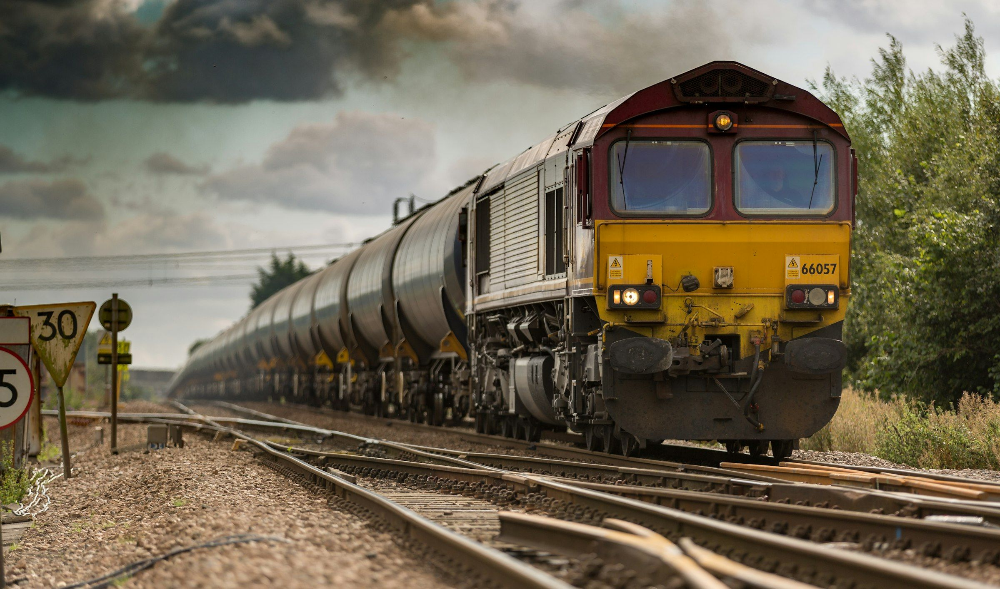
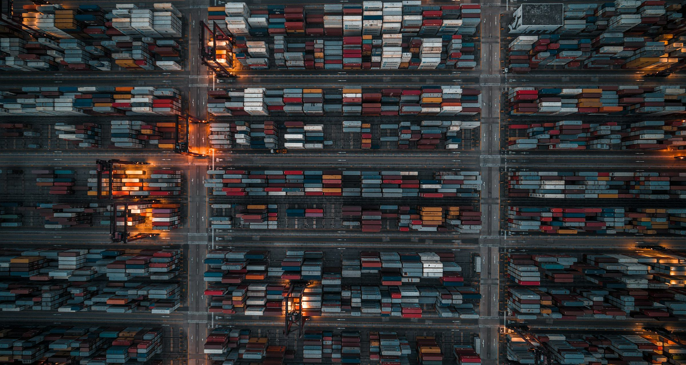

Full Truckload (FTL)
Dedicated 53' trailers for loads over 12 pallets, direct from dock to dock with no rehandling.
Transit1–5 days

Road, intermodal rail and multimodal forwarding under one contract. Our planners model cost, transit time and carbon before every booking.
Dedicated 53' trailers for loads over 12 pallets, direct from dock to dock with no rehandling.
Share trailer space and pay only for the pallets you ship, consolidated through 62 cross-docks.
Containers move by rail on the long haul with truck drayage at both ends — ideal beyond 800 km.
Multimodal international moves with carrier booking, documentation and consolidation handled for you.
Licensed brokers file entries, classify goods and manage duties so freight clears on arrival.
Oversized and heavy-lift moves engineered end to end: route surveys, permits, escorts and cranes.
Network averages for general cargo in 2026. Rail and ocean win on cost and emissions; air wins on speed.
Our rail program moves 53' domestic and 40' international containers on Class I networks across North America and on EU corridors from Hamburg, Rotterdam and Warsaw.
Our own trucks handle first and last mile, so one team owns the whole move.
Every box carries a tracker — no more waiting for rail EDI feeds.
Shipment-level CO₂ statements for your Scope 3 disclosures.

Our calculator compares road, rail, air and ocean side by side — including CO₂.